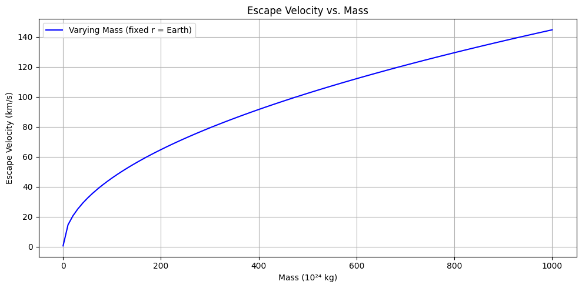
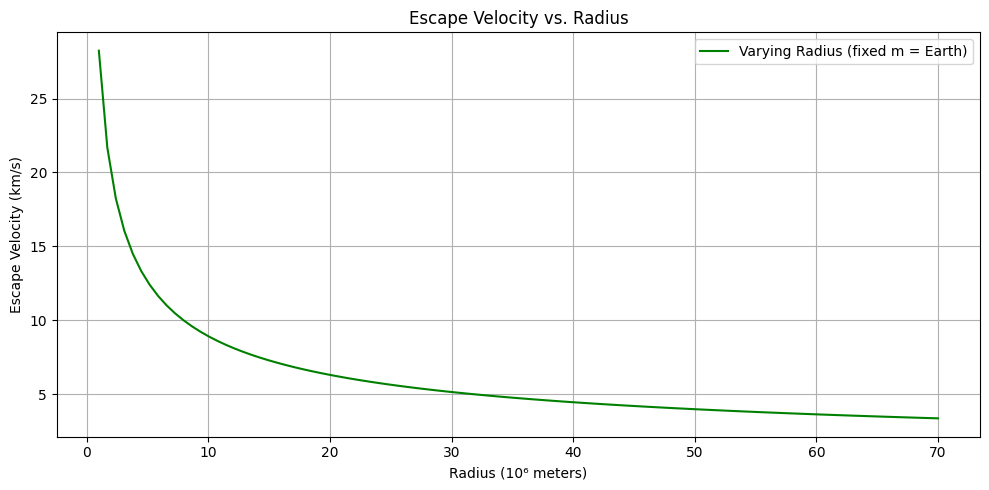
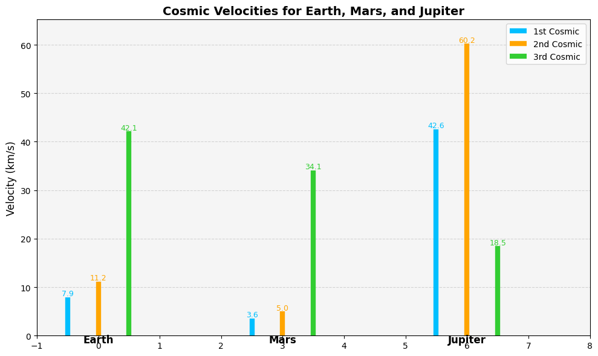
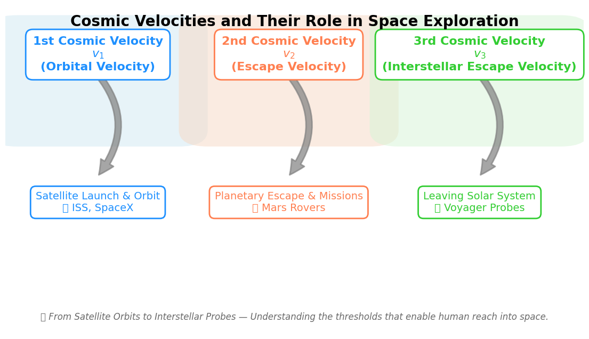

Problem 2
Escape Velocities and Cosmic Velocities
Define the Concepts
🚀 First Cosmic Velocity — Orbital Velocity
- Definition: The minimum velocity required for a body to stay in a stable circular orbit around a celestial object (like Earth) without propulsion.
- Physical Meaning:
- At this speed, the gravitational pull provides exactly the centripetal force needed for circular motion.
- A satellite moving at this speed remains in orbit just above the surface.
🌍 Second Cosmic Velocity — Escape Velocity
- Definition: The minimum velocity needed to break free from the gravitational field of a celestial body without further propulsion.
- Physical Meaning:
- If a spacecraft reaches this velocity, it will escape the planet's gravity and not return, unless acted upon by another force.
- It is independent of the direction of launch (ignoring atmosphere and rotation).
🌌 Third Cosmic Velocity — Interstellar Escape Velocity
- Definition: The minimum velocity required to escape the gravitational influence of the entire star system (e.g., Sun + planets).
- Physical Meaning:
- This is the speed needed to leave the solar system entirely.
- Used in planning interstellar missions like Voyager 1 & 2.
📐 Mathematical Analysis
1️⃣ First Cosmic Velocity (Orbital Velocity)
- Derived from equating centripetal force and gravitational force:
- Solving for \(v\):
- Parameters:
- \(G\): Gravitational constant
- \(r\): Radius from center of mass (typically planet’s radius for low orbit)
2️⃣ Second Cosmic Velocity (Escape Velocity)


- Derived from conservation of energy:
- Total mechanical energy at escape = 0 (kinetic = gravitational potential energy)
- Note: \(v_2 = \sqrt{2} \cdot v_1\)
3️⃣ Third Cosmic Velocity (Interstellar Escape)
- More complex derivation involving solar system dynamics.
- Escape velocity from Sun at Earth's orbit:
- If starting from Earth, subtract Earth's orbital velocity (~29.78 km/s):
📊 Parameter Effects
- Mass (\(M\)): Directly increases velocity — more massive body requires more speed to escape.
- Radius (\(r\)): Inversely proportional — closer to center means stronger gravity, hence higher velocity.
- Gravitational constant (\(G\)): A fixed universal constant.
🔁 Comparison Table
| Velocity Type | Formula | Depends On |
|---|---|---|
| First Cosmic (\(v_1\)) | \(\sqrt{\frac{GM}{r}}\) | Mass, Radius |
| Second Cosmic (\(v_2\)) | \(\sqrt{\frac{2GM}{r}}\) | Mass, Radius |
| Third Cosmic (\(v_3\)) | \(\sqrt{\frac{2GM_{\odot}}{r}}\) | Sun's Mass, Distance |
🌌 Cosmic Velocities – Calculations and Visualizations
🎯 Objective
- Calculate the first, second, and third cosmic velocities for the following celestial bodies:
- Earth
- Mars
- Jupiter
- Create visualizations to compare these velocities across planets.
🧮 Formulas Used
- Gravitational constant: \(G = 6.67430 \times 10^{-11} \, \mathrm{m^3\,kg^{-1}\,s^{-2}}\)
First Cosmic Velocity: Orbital Velocity, Definition: The minimum horizontal velocity needed for an object to enter a stable circular orbit just above the surface of a celestial body without propulsion., Physical Meaning: Balances centripetal force and gravitational force., Object "falls around" the planet, never reaching the surface., ,
Derivation:,
Solving for velocity \(v\):
Where: \(G\) = Gravitational constant \(\approx 6.674 \times 10^{-11}\ \text{Nm}^2/\text{kg}^2\), \(M\) = Mass of the celestial body, \(R\) = Radius from the center of the body,
🪐 Second Cosmic Velocity: Escape Velocity, Definition: The minimum velocity needed to escape the gravitational field of a celestial body without further propulsion., Physical Meaning: Reaches a point at infinity with zero kinetic energy remaining., Not an orbit — a one-way departure from the gravitational pull., ,
Derivation:,
From conservation of mechanical energy:
Solving for \(v\):
🔎 Note: Escape velocity is \(\sqrt{2}\) times the first cosmic velocity.
🌞 Third Cosmic Velocity: Solar System Escape Velocity, Definition: The minimum velocity required to escape the Sun’s gravitational field starting from a planet’s surface., Physical Meaning: Combines: Escape velocity from the planet., Additional velocity to escape the Sun’s pull from the planet’s orbit., , ,
Approximate Formula:,
Where: \(v, {\text{planet-escape}} = \sqrt{\frac{2GM_p}{Rp}}\) \(v, {\text{sun-orbit}} = \sqrt{\frac{2GM_s}{r}}\) \(M_p\): Mass of the planet, \(R_p\): Radius of the planet, \(M_s\): Mass of the Sun, \(r\): Distance from the planet to the Sun
🧠 Parameters
- \(M\): Mass of the planet
- \(r\): Radius of the planet
- \(M_{\odot}\): Mass of the Sun
- \(R_{\text{orbit}}\): Distance from Sun (orbital radius of the planet)
🐍 Python-Visual Code

import numpy as np
import matplotlib.pyplot as plt
# Constants
G = 6.67430e-11 # Gravitational constant (m^3 kg^-1 s^-2)
M_sun = 1.989e30 # kg
# Planetary data
planets = {
'Earth': {'mass': 5.972e24, 'radius': 6.371e6, 'orbit_radius': 1.496e11},
'Mars': {'mass': 6.4171e23, 'radius': 3.3895e6, 'orbit_radius': 2.279e11},
'Jupiter': {'mass': 1.898e27, 'radius': 6.9911e7, 'orbit_radius': 7.785e11}
}
# Storage
planet_names = []
v1_values = []
v2_values = []
v3_values = []
# Calculation
for name, data in planets.items():
M = data['mass']
r = data['radius']
R_orbit = data['orbit_radius']
v1 = np.sqrt(G * M / r)
v2 = np.sqrt(2 * G * M / r)
v3 = np.sqrt(2 * G * M_sun / R_orbit)
planet_names.append(name)
v1_values.append(v1 / 1000) # km/s
v2_values.append(v2 / 1000)
v3_values.append(v3 / 1000)
# Set up better visualization
fig, ax = plt.subplots(figsize=(10, 6))
ax.set_facecolor('whitesmoke')
colors = ['deepskyblue', 'orange', 'limegreen']
x_positions = np.arange(len(planet_names)) * 3 # spacing between planets
# Plot each velocity as a vertical line ("tower")
for i, name in enumerate(planet_names):
xpos = x_positions[i]
ax.vlines(xpos - 0.5, 0, v1_values[i], color=colors[0], lw=6, label='1st Cosmic' if i == 0 else "")
ax.vlines(xpos, 0, v2_values[i], color=colors[1], lw=6, label='2nd Cosmic' if i == 0 else "")
ax.vlines(xpos + 0.5, 0, v3_values[i], color=colors[2], lw=6, label='3rd Cosmic' if i == 0 else "")
# Add labels
ax.text(xpos - 0.5, v1_values[i] + 0.3, f"{v1_values[i]:.1f}", ha='center', color=colors[0], fontsize=9)
ax.text(xpos, v2_values[i] + 0.3, f"{v2_values[i]:.1f}", ha='center', color=colors[1], fontsize=9)
ax.text(xpos + 0.5, v3_values[i] + 0.3, f"{v3_values[i]:.1f}", ha='center', color=colors[2], fontsize=9)
# Planet label
ax.text(xpos, -1.5, name, ha='center', fontsize=12, fontweight='bold')
# Aesthetics
ax.set_xlim(-1, x_positions[-1] + 2)
ax.set_ylim(0, max(v2_values) + 5)
ax.set_ylabel("Velocity (km/s)", fontsize=12)
ax.set_title("Cosmic Velocities for Earth, Mars, and Jupiter", fontsize=14, fontweight='bold')
ax.legend(loc='upper right')
ax.grid(True, axis='y', linestyle='--', alpha=0.5)
plt.tight_layout()
plt.show()
🚀 Discussion: Importance of Cosmic Velocities in Space Missions
Understanding cosmic velocities is critical in planning space missions. The three main velocities — first, second, and third cosmic velocities — define key thresholds in spaceflight dynamics.
🌀 First Cosmic Velocity (\(v_1\)): Orbital Velocity
- Definition: Minimum velocity needed to place a satellite into stable circular orbit around a planet.
- Equation:
\(\(v_1 = \sqrt{\frac{GM}{r}}\)\)
where: - \(G\) = gravitational constant
- \(M\) = mass of the planet
-
\(r\) = radius from the planet's center
-
Use case:
- Placing satellites like the ISS (International Space Station) into low Earth orbit.
- Used by companies like SpaceX and NASA for communication and Earth observation satellites.
🚀 Second Cosmic Velocity (\(v_2\)): Escape Velocity
- Definition: Minimum velocity to completely escape a planet's gravitational field.
-
Equation:
\(\(v_2 = \sqrt{2} \cdot v_1 = \sqrt{\frac{2GM}{r}}\)\) -
Use case:
- Used in interplanetary missions, such as Mars rovers (Perseverance, Curiosity).
- Apollo missions had to reach this speed to leave Earth and travel to the Moon.
🌌 Third Cosmic Velocity (\(v_3\)): Interstellar Escape Velocity
- Definition: Minimum velocity to escape the gravitational pull of the Sun from Earth’s orbit.
- Equation:
\(\(v_3 = \sqrt{\frac{2GM_{\odot}}{R}}\)\)
where: - \(M_{\odot}\) = mass of the Sun
-
\(R\) = orbital radius (e.g., 1 AU for Earth)
-
Use case:
- Missions like Voyager 1 and Voyager 2 (launched in 1977) exceeded this speed.
- These probes are now traveling through interstellar space, having exited the heliosphere.
🛰️ Summary of Practical Implications

- \(v_1\): Required to maintain satellite orbits.
- \(v_2\): Required to conduct planetary transfers or leave planets.
- \(v_3\): Required to exit the Solar System and explore interstellar space.
🌍 Real-World Examples
| Mission | Velocity Used | Purpose |
|---|---|---|
| ISS Launches (e.g., SpaceX) | \(v_1\) | Satellite orbiting Earth |
| Mars Rovers (Perseverance) | \(v_2\) | Escape Earth to reach Mars |
| Voyager 1/2 (NASA, 1977) | \(v_3\) | Escape the Solar System |
💡 These concepts not only define theoretical thresholds but also directly inform mission planning, fuel budgeting, and spacecraft engineering.